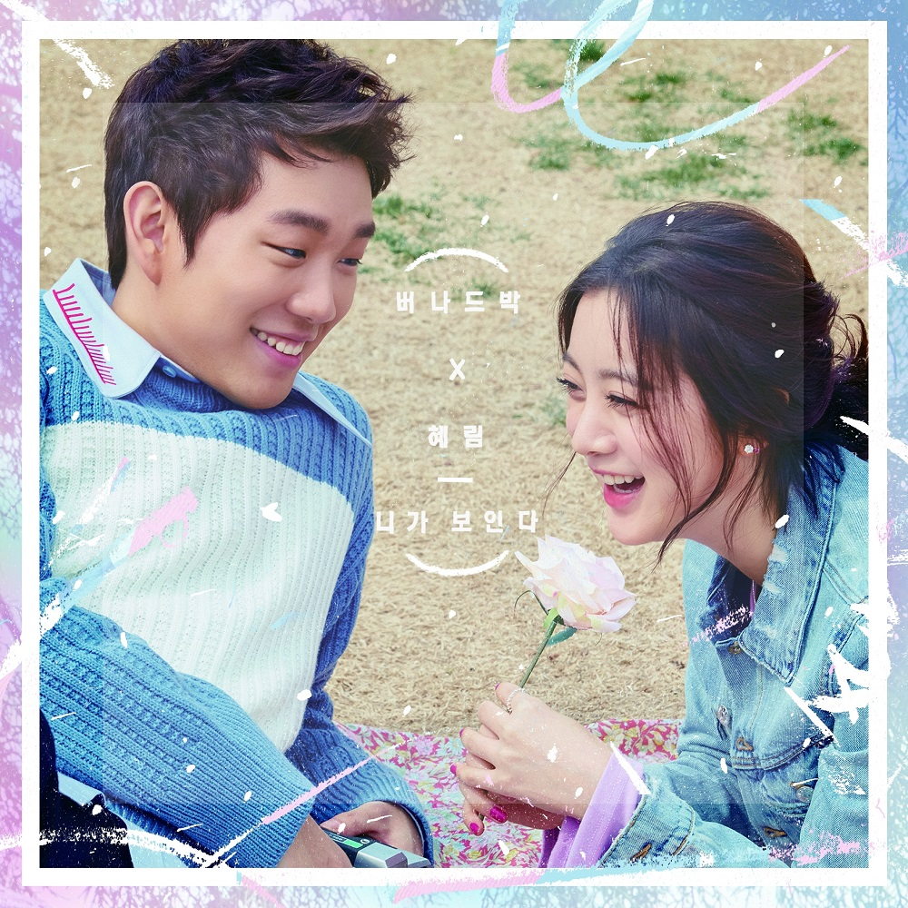

DISCOGRAPHY
-
Still
2018-10-10
Still은 헤어진 연인이 서로의 관점에서 자신들의 감정을 돌아보는 곡으로, 낙준과 f(x)의 루나가 함께 부르는 팝 발라드 장르의 곡이다...
-
탓
2017-06-28
버나드 박, 본명 '낙준'으로 활동명 바꾸고 3년여 만에 신곡 ‘탓’ 공개!
- 6월 28일 정오 디지털 싱글 타이틀 곡 ‘탓’ 발표
- ‘탓’, 낙준 본연의 보컬과 어반 R&B 장르의 특색 살린 곡
- ‘아르마딜로, 에코브릿지, 에이브’ 유명 작곡진과 협업... -
 니가 보인다
2016-04-03
버나드 박 X 혜림(원더걸스), 4월 3일 첫 번째 싱글 '니가 보인다' 발표.
- 버나드 박 X 혜림(원더걸스), 첫 번째 콜라보레이션 프로젝트! '니가 보인다' 발표.
- 버나드 박 X 혜림(원더걸스), 달달한 러브송 발매 예고...